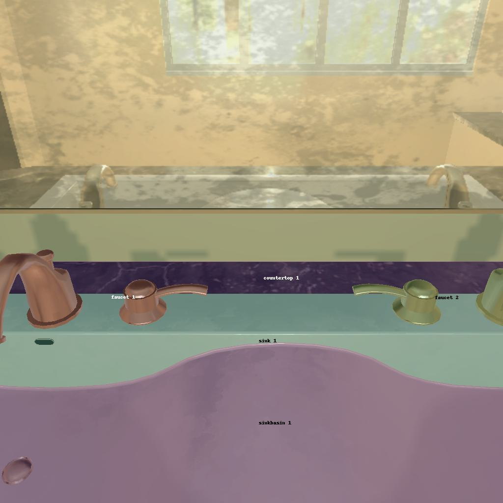

---------------------------------------------------------task: 11---------------------------------------------------------
--------------------------------------------------------------------------------------------------------------------------------------------------------------------
--------------------------------------------------------------------------------------------------------------------------------------------------------------------
Step:--------------------------------------------------------------------------4-------------------------------------------------------------------------------
----------------------------------------
VLM Prompt:
Image1:
Image2:
Image3:
**Instruction**
1. Analyze the provided image to identify all visible household objects, focusing on those relevant to the task description "clean some soapbar and put it in bathtubbasin."
2. Use the analysis of the image and the task hint "The agent must find an object of the desired type, pick it up, go to a sink or a basin, clean the object with a sink or basin, and then find the correct location to place it and put it down there. The agent does not need to use soap bottle or faucet to clean the object, and the agent just needs to do action that is "clean the object with the sink or sink basin"." to answer the question: what is the most reasonable action in the choices for the task description "clean some soapbar and put it in bathtubbasin"?
4. Decide and write the answer using the template: The answer is: (i): , where i is the real number. If there is no desired object in the image, search every place based on **Initial Observation** to find the object. And if no one is exactly correct, choose a similar answer.
**Initial Observation**
You are in the middle of a room. Looking quickly around you, you can see bathtub (1), bathtubbasin (1), toilet (1), cabinet (1-2), countertop (1), sink (1), sinkbasin (1), garbagecan (1)
**Answer Choices**
(1): go to bathtub 1
(2): go to bathtubbasin 1
(3): go to toilet 1
(4): go to countertop 1
(5): go to sink 1
(6): go to cabinet 2
(7): go to garbagecan 1
(8): open cabinet 1
(9): close cabinet 1
(10): examine cabinet 1
**Answer**
Let's think step by step by following the instructions.
----------------------------------------
----------------------------------------
Original Response:
First, we need to identify all visible household objects relevant to the task description "clean some soapbar and put it in bathtubbasin." From the images, we can see a bathtub, bathtubbasin, sink, and sinkbasin, which are relevant to cleaning an object. However, we do not see a soapbar in any of the images.
The task hint tells us that the agent must find an object of the desired type, which in this case is a soapbar. Since we do not see a soapbar in the images, we must search every place based on our initial observation to find the object. The places we can search are bathtub, bathtubbasin, toilet, cabinet, countertop, sink, sinkbasin, and garbagecan.
Given that we need to clean the soapbar, the most reasonable action would be to go to a location where the soapbar might be found. Since we need to clean it, it would make sense to start by searching near the cleaning areas, such as the bathtub, bathtubbasin, sink, or sinkbasin. Since we also need to put it in the bathtubbasin after cleaning, it would be most efficient to search the bathtubbasin first.
The answer is: (2): go to bathtubbasin 1.
----------------------------------------
----------------------------------------
>>> Refine Original VLM Response and Get Pure Action: go to bathtubbasin 1
----------------------------------------
-----------------------------------------------------------------
Running time: 13.648559093475342 seconds
Total Money: 6.457740000000001
-----------------------------------------------------------------
-----------------------------------------------------------------
Text Observation:You arrive at loc 1. On the bathtubbasin 1, you see a cloth 1, a faucet 3, and a candle 2.
-----------------------------------------------------------------
UNSUCCEED